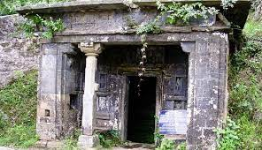
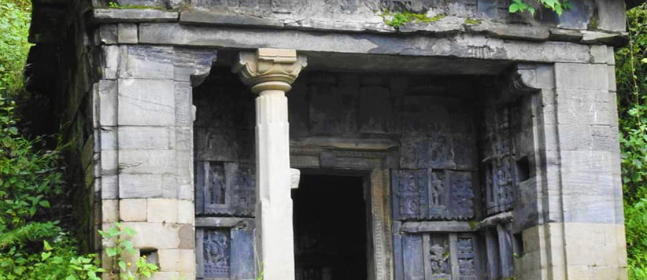

EK HATHIYA
NAULA

- EK HATHIYA NAULA, UTTARAKHAND
- Locality/village : Champawat
- State : Uttarakhand
- Country : India
- Nearest City/Town : DHAKANA BADOLA
- Best Season To Visit : All
- Languages : Hindi & English
- Timings : 9 AM to 11.30 AM and 5 PM to 8.30 PM.
- Photography : Allowed
चम्पावत से ढकना गांव (चम्पावत-अल्मोड़ा पुराना पैदल मार्ग) तक तीन किमी. और ढकना से चम्पावत-मायावती पैदल मार्ग से लगभग चार किमी. की दूरी पर प्राचीन कुमाऊँ की स्थापत्यकला के एक अत्यंत उत्कृष्ट उदाहरण के रूप में ‘एक हथिया नौला’ बना है. स्थानीय लोगों का विश्वास है कि इस नौले का निर्माण एक हाथ वाले शिल्पी ने किया था. एक अन्य मान्यता के अनुसार यह माना जाता है कि नौले का निर्माण करने वाले शिल्पी का हाथ राजा ने कटवा दिया था ताकि वह अन्यत्र ऐसी कलाकृति न कर सके. (Famous Ek Hathiya Naula Champawat)
चम्पावत से ढकना गांव (चम्पावत-अल्मोड़ा पुराना पैदल मार्ग) तक तीन किमी. और ढकना से चम्पावत-मायावती पैदल मार्ग से लगभग चार किमी. की दूरी पर प्राचीन कुमाऊँ की स्थापत्यकला के एक अत्यंत उत्कृष्ट उदाहरण के रूप में ‘एक हथिया नौला’ बना है. स्थानीय लोगों का विश्वास है कि इस नौले का निर्माण एक हाथ वाले शिल्पी ने किया था. एक अन्य मान्यता के अनुसार यह माना जाता है कि नौले का निर्माण करने वाले शिल्पी का हाथ राजा ने कटवा दिया था ताकि वह अन्यत्र ऐसी कलाकृति न कर सके. (Famous Ek Hathiya Naula Champawat)

कला की दृष्टि से यह कुमाऊँ की बेजोड़ कलाकृतियों में से एक है. इसकी भित्तियों में चुनी गयी शिला-मूर्तियों के साथ राहगीरों और कौतुहलप्रिय ग्वालों ने काफी छेड़छाड़ की है. नितांत सन्नाटे वाले स्थान में होने के कारण इसकी रोकथाम संभव नहीं हो सकी. इसकी छत के कुछ पटाल (छत के पटाव में युक्त पत्थर) दुबारा चढ़ाए गए प्रतीत होते हैं. संभव है पहले कभी छत गिरी हो जिसकी बाद में मरम्मत कर दी गयी होगी.
भित्ति पर लगी मूर्तियों तथा उस पर उकेरे गए अभिप्रायों से प्रतीत होता है कि नौले का निर्माण बालेश्वर मंदिर से कुछ पहले किया गया होगा. इसके शकों के काल की कलाकृति होने में भी संदेह नहीं है क्योंकि औदीच्य वेशधारी सूर्य की प्रतिमा इस नौले की पर्मुख प्रतिमा है जबकि बालेश्वर के मंदिर में बूटधारी कोई प्रतिमा नहीं है. सभी मूर्तियों में पुरुषों को धोती पहने नंगे पैर दिखाया गया है. इस नौले की सभी स्त्री मूर्तियों में उनको लहंगानुमा कोई अधोवस्त्र धारण किये हुए दर्शाया गया है. कुछ प्रतिमाओं को छोड़कर अधिकांश पुरुष प्रायः घुटनों तक अधोवस्त्र पहने हैं. लोकजीवन के वैविध्यपूर्ण दृश्य नर्तक, वादक, गायक, फल ले जाती स्त्री, राजा, सेवक, सिपाही आदि अनेक प्रकार के समाज के महत्वपूर्ण अवसरों से सम्बंधित व्यक्तियों की आकृतियाँ बड़ी प्रभावोत्पादक हैं. अनेक प्रकार के चित्रणों के साथ-साथ कहीं पर स्त्री-पुरुषों के सहज आकर्षण के अभिप्राय भी अंकित किये गए हैं. स्त्री-पुरुषों के जूड़ों में केशसज्जा की विविधता, पर्वतीय महिलाओं की भांति पिछौड़ी (ओढ़नी) से सर ढंकना भी संभवतः उस समय प्रचालन में रहा होगा. उभरे हुए गाल, कुछ की चपटी नासिका विशेष प्रकार के अभिप्राय को व्यक्त करती है. भित्तिगत मूर्तियों में अधिक संख्या नृत्य एवं उल्लास की विविध मुद्राओं वाली है. (Famous Ek Hathiya Naula Champawat)
Explore more